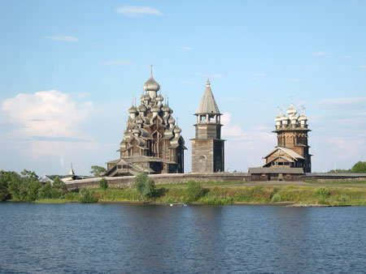

|  |
Honorable Mention Kizhi Island, Lake Onega, Russia The isle of Kizhi was the northern most extension of our Russian cruise in 2004 and is located in the north end of Lake Onega, about the same latitude as Anchorage, Alaska. Unique to the island are ancient wooden churches that are weathered and shine with a silver patina. The shingles covering the many cupolas are made from aspen and are attached to the structure with wooden pegs. After our tour we embarked on our boat to return down Lake Onega and thence on to St. Petersburg. As our boat sailed past the churches of Kizhi for the last time I snapped this photo. |